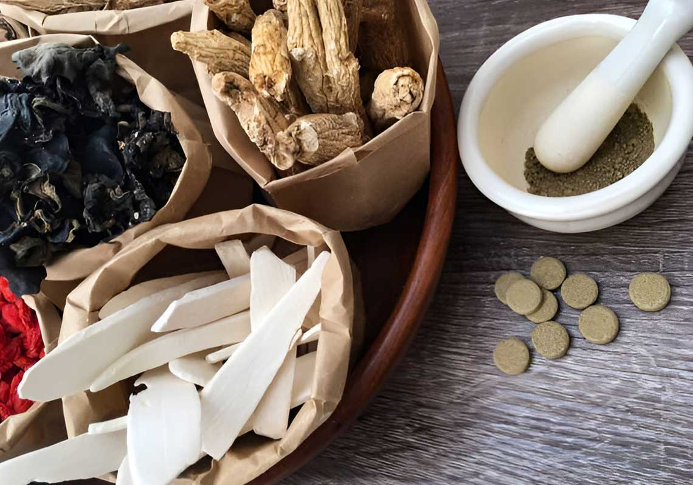
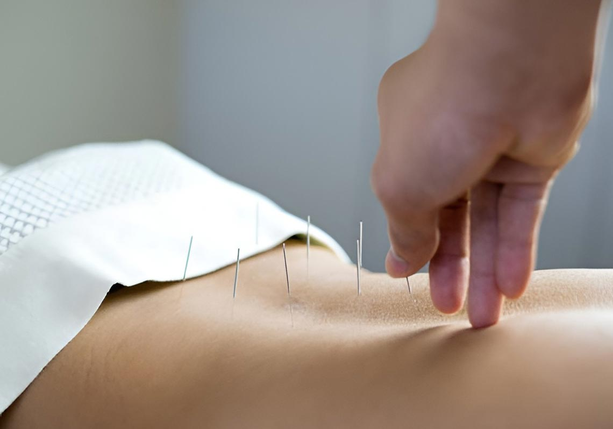

中醫減重最大的優勢就是安全、有效、副作用少，但網絡上也有聲音說「吃中藥會拉肚子」、「中藥吃多牙齒會變黃」，到底中藥減重有哪些問題要注意，今天就和大家聊聊這個話題。
前一陣子有一個小姐姐分享了自己的中醫減重經歷，減重過程中，醫生開的中藥，讓她覺得嚇了一大跳，發現她的食物跟食量越來越少，小編就有疑問食慾減少那不是很好嗎？可是那個姐姐是個美食小天才，哪裡有好吃的，就往哪裡跑。大家在減重的過程中勢必還是要得飲食控制的。這種例子在我們身邊還蠻常見的，那麼中醫減重會有哪些富足用要注意，相信大家在網絡上爬過了很多文章，但是沒有幾個可以講到位的。今天就來向大家誠實公開中醫減重的副作用。
大家在減重的過程中勢必還是要得飲食控制的。這種例子在我們身邊還蠻常見的，那麼中醫減重會有哪些副作用要注意，相信大家在網絡上爬過了很多文章，但是沒有幾個可以講到位的，今天就來向大家誠實公開中醫減重的副作用。
中藥類別

科學中藥
用現代化設備所製成，常見型態有藥粉、錠、膠囊等。
水藥
傳統的煎製，把炮製過的藥材煮成藥湯服用。
吃中藥的過程中，可以同時幫你調理好體質。還會漸漸幫你氣血循環，改善消化機能。
可以在網絡上可以看到很多吃中藥吃出病的新聞，事實上乖乖遵守醫囑，才能安全有效，如果真有這種情況發生，不外乎三種原因：一不顧體質，二自己亂買藥，三不聽醫囑。
不顧體質
首先需要去了解自己的身體的狀況，才能對症下藥，健康的減重，如果不顧體質亂吃藥，翻車的機率非常的高。平常遇到身邊很多女生本身可能因為工作很忙，壓力很大，檢查過後發現肝火是屬於比較旺的，很多中藥補品反而是不適合吃的，適合別人的不一定適合自己，中藥真的不能亂吃。
自己亂買藥
我們吃中藥第二個會翻車的原因不外乎就是“自己亂買藥“，這個真的很重要。很多人不知道自己什麼體質什麼狀況就去藥局亂買，其實真的會傷到自己的身體，中藥還是要有專業的醫師幫你配藥才是安全的，不要覺得自己在網絡上查一查就可以懂得配藥，中藥藥性其實是非常複雜的，中醫師執照真的不是白考的。
不聽醫生囑咐
中藥也是藥，不按規矩吃中藥也會出問題的，不過也有人有這樣的問題，中藥和西藥可以一起吃嗎？一般建議中藥跟西藥間隔兩小時後服用，而且要注意，你要跟你的中醫師說，你有在看西醫，因為怕中藥跟西藥一起開了同性質的藥，可能就會吃過量的問題。比如說去看西醫，醫師幫你開了降血脂的藥，中醫師又開了紅麴，就可能出現過量的問題。
當然大家如果還是覺得中藥起效慢的話，可以試試見效更快的Xenical/羅氏鮮減肥藥喔，減肥藥中的「油脂殺手」，喜歡吃糖油食品的話，相信你購買後一定不會後悔的！
埋線減脂，可能有哪些副作用呢？

另外一個中醫常見減重的方式——埋線，有哪些可能會有的副作用。
最常見的就是埋完線後有痠、脹、麻，例如像是肌肉痠痛的感覺，尤其像是腿部或是肌肉比較多的地方，疼痛感會比較明顯，像是體質比較虛的體質，症狀持續3-7天為正常現象，前三天冰敷就可以緩解疼痛。
其實像埋線，我們又會說它是針灸的延長版，有些人埋線會有瘀青的現象，整個是很正常的，因不同人體質而有不同的現象。當然埋線前還是需要睡飽睡好，不然身體會比較敏感，埋線到身體裡面的時候，埋線線材會被人體吸收，完成後可以正常活動，不用擔心，但是也要儘量去避免開放性的水域保護傷口。
常見問題
Q:吃中藥容易口渴？
A：這是中藥提升代謝的正常反應。
Q：吃中藥後感到疲憊？
A：這個很正常，中藥就是幫你增加全身氣血循環，幫身體做運動。
Q：吃中藥後牙齒會發黃？
A：可以多補充水分改善這個狀況